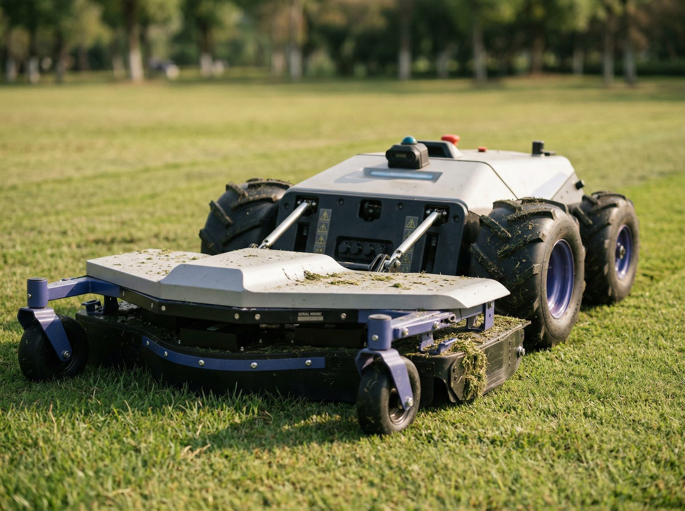

How the machine sees: RTK positions, perception protects
Two different jobs, and they use different senses. What the sensor stack on a commercial autonomous mower actually does, and where a person still matters.

Two different jobs, and they use different senses.
A commercial autonomous mower has to do two things at the same time. It has to know where it is on the property, and it has to react to what is new in front of it. Those are separate jobs, and they use different sensors.
Position is what RTK does. Perception is what everything else does. Both matter, and neither replaces the other.
Knowing where it is
RTK positioning. The machine holds its lines to about two centimetres and cuts the same paths every cycle. It is precise, and it is blind. RTK knows nothing about anything that was not there when the site was mapped.
Seeing what is new
That is the perception layer, and it is what lets the machine work without a person walking behind it.
1. LiDAR
A laser scanner that measures distance and shape, day or night. It is the sensor that can tell a post from a person, and it does not care about darkness or glare.
2. Cameras
Add context and colour, and help the machine understand what it is looking at. Weaker at night and in low sun.
3. Ultrasonic and radar
Short range, and very good at saying something is there, even in dust and rain. Less good at saying what.
Deeper on obstacle detection, and how LiDAR compares to radar: LiDAR on an autonomous mower →
How RTK and LiDAR work together.
RTK answers one question: where am I, to the centimetre. LiDAR answers the other: what is in front of me right now. On a commercial site the machine needs both, at the same instant.
Schematic. Sensor behaviour varies by machine and by site.
αRTK holds the line
The base station sits in one fixed spot and measures its own satellite error, then streams that correction to the machine. The machine subtracts the same error and knows where it is to about two centimetres, every pass, every cycle, no boundary wire.
βLiDAR reads the moment
RTK knows the mapped site: the orchard rows, the array, the headlands. It knows nothing of the pallet of bricks dropped in the lane this morning. The scanner sweeps ahead many times a second and measures range to whatever is actually there.
γTogether
LiDAR is the only system allowed to break the line, and RTK is what puts the machine back on it, to the centimetre, the moment the obstacle clears. Coverage stays complete without re-scanning the block.
Not every commercial mower carries all three
Some run radar and cameras only. We specify the sensor stack to the ground: where people or animals can be present, we put LiDAR-equipped machines. On fenced orchard rows and solar farms with controlled access, radar and cameras are enough.
The last layer
A contact bumper, an emergency stop on the machine and on the remote, and blade shutdown the moment the machine lifts or tilts. This is what happens if everything above it has been fooled.
What sensors do not replace
Mapped no-go zones. Scheduling around when people are on site. Fencing where it is needed. And a person for close-in work around posts, structures and edges. We do not run these unsupervised where the public walks, and we will tell you that before you ask.
Safety and sensor questions
For the whole-system view
This page focuses on how the machine perceives its environment. For how it knows where it is, read the RTK page. For the complete AutoAcre offer, Buy + Manage, ongoing operation and 8-year ownership economics, start at the Acreage Solutions hub.
Property-size deep dive: 2.5–10 Acre Autonomous Systems. Local install context: Byron Bay, Bangalow.